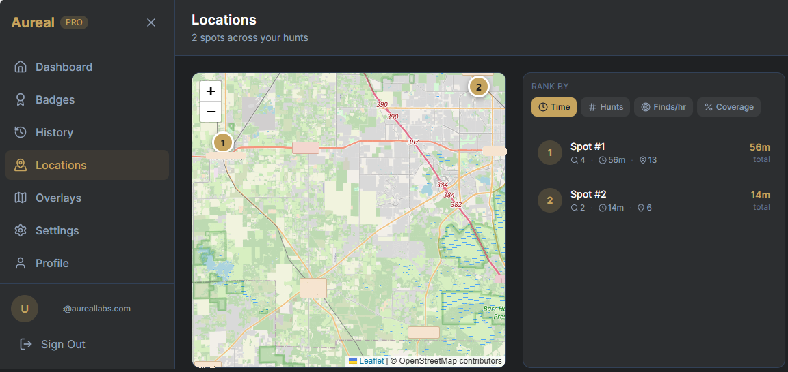

One of the hardest decisions in metal detecting isn't where to go for the first time. It's deciding whether a place is actually worth going back to.
You find a spot, maybe through research or just by exploring, and you give it a shot. The first hunt might be decent. A few finds, a few good signals, enough to feel like there could be more there. But after that, it gets less clear.
Do you go back again? Or was that just a lucky pass?
The Instinct Trap
Most detectorists end up relying on instinct to answer that. If it "felt good," they return. If it didn't, they move on. But that feeling is usually based on a small sample. One hunt doesn't tell you much about a location, and even a few hunts can be misleading depending on how you approached the area or what conditions were like at the time.
You might abandon a site too early that still has a lot left in it. Or you might keep going back to a place that isn't nearly as productive as it seems.
The problem is, there's no clear way to measure a location over time.
Everything lives in your head. You remember roughly how many times you've been there, maybe a few standout finds, but not the full picture. You don't really know how much time you've invested, how much ground you've covered, or how productive that time actually was compared to other spots.
Building the Bigger Picture
That's where things start to change.
Instead of thinking about a location as a single hunt, you can start looking at it as something that builds over time. Every visit adds to the story. How long you were there, how much you found, how thoroughly you covered the area — it all starts to accumulate into something you can actually evaluate.
With Aureal, hunts that happen in the same general area are automatically grouped together into what becomes a single "spot." You don't have to organize anything manually or remember where each hunt took place. The app recognizes that they're part of the same location and combines them into a bigger picture.
Once that happens, you can start to see what that spot really looks like.
Not just how many finds came from one visit, but how many finds per hour you're averaging across all of your time there. You can see how often you've returned, how much total time you've invested, and how thoroughly you've covered the area. Instead of relying on a feeling, you're looking at something measurable.
Making Better Decisions
That's where it becomes easier to make decisions.
A spot that felt average might actually be one of your most productive locations once you look at it over time. Another spot that seemed promising might show a low return despite multiple visits. Instead of guessing, you can start prioritizing based on what's actually producing results.

On the web portal, this becomes even clearer.
You can see your locations laid out on a map, with each spot represented by a central point and tied to all the hunts that happened there. You can rank them based on what matters to you, whether that's total finds, time invested, or most importantly, finds per hour. You can even look at your trails stacked together to understand how thoroughly you've worked a site and where opportunities might still exist.
Building Your Proven Set
Over time, this changes how you choose where to go.
Instead of chasing new locations every time, you start to build a set of known, proven spots. You know which ones are worth revisiting, which ones need more coverage, and which ones are probably tapped out for now.
In a hobby where time is limited and good locations are hard to come by, that kind of clarity matters.
Because the difference between a good detectorist and a great one isn't just where they go.
It's knowing which places are worth going back to, and which ones aren't.
Rank your hunting grounds
Aureal automatically groups your hunts by location. Pro users get spot ranking, stacked trail views, and finds-per-hour comparisons on the web portal.
Download Aureal